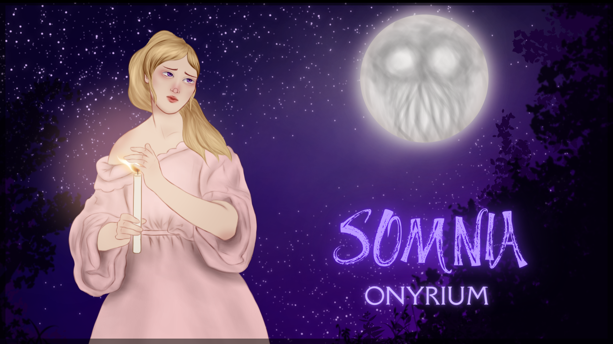
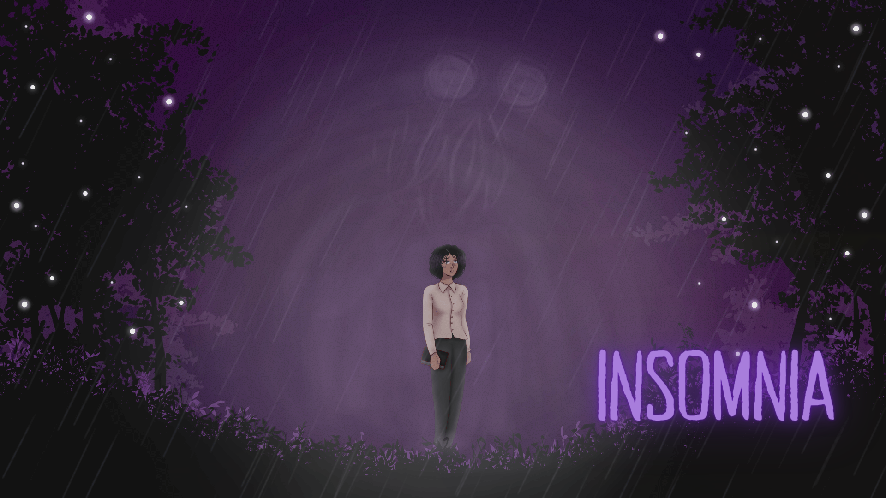
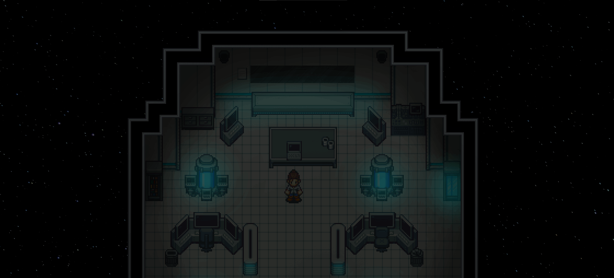

Arthur da Silva Schwambach
Experiência em Criação de Jogos
Experiência em Roteirização
Projetos
Somnia: Onyrium

Somnia: Onyrium é um jogo de suspense em que interpretamos Aela, uma garota de olhos roxos que busca encontrar o motivo do desaparecimento de sua família.
Insomnia

Insomnia é um jogo que se passa em uma história alternativa de Somnia: Onyrium.
Nele interpretamos Elizabeth, que busca entrar no Mundo dos Sonhos para salvar sua melhor amiga Aela.
Lunari

Lunari é um jogo de suspense que se passa em uma nave espacial.
Nele interpretamos Naomi, uma cientista que tenta desvendar os mistérios que assolam a nave Lunari A.
Sobre Mim
Olá, pessoal! Eu sou o Arthur.
Sou um criador de jogos que iniciou fazendo pequenos projetos em RPG Maker. Atualmente, além do RPG Maker, utilizo ferramentas como GameMaker e Unity.
Meu primeiro jogo participou de um concurso e recebeu o prêmio de "Melhor Narrativa e Escrita". Com isso, fui convidado para ser roteirista de um jogo indie com uma equipe de desenvolvedores profissionais.
Enquanto faço projetos de roteirização, escrevo livros de ficção que variam dentre fantasia medieval sombria e fantasia sombria contemporânea.